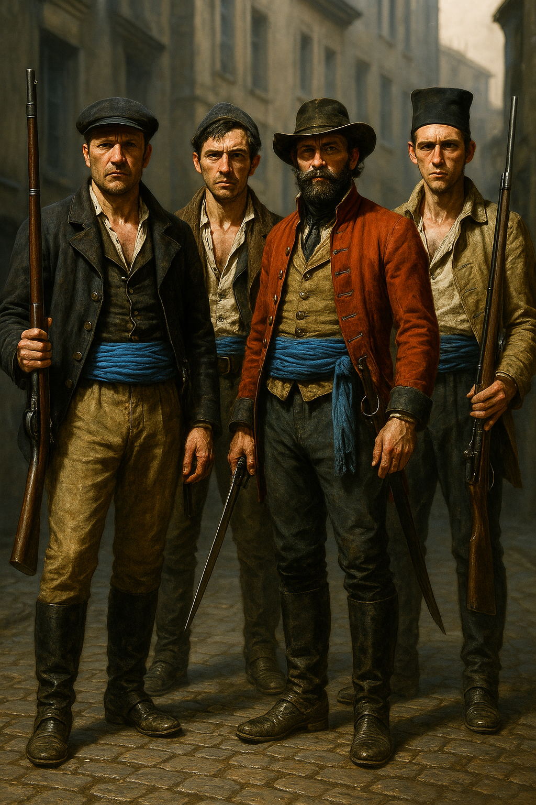

Blue Sashes
Leadership: Luc_Fouchard|Captain Luc Fouchard
Territory: Lyon
Overview
The Blue Sashes are Savarin’s private enforcers in Lyon — hardened veterans of Napoleon’s Grande Armée, now serving as her paramilitary force. They wear pale-blue sashes as a symbol of loyalty. Commanded by Captain Luc Fouchard, they guard Savarin’s operations, enforce her will across the city, and provide muscle for the Société_Harmonique_de_l_Aube. Their fanatical loyalty stems from Savarin’s performances and subtle supernatural influence.
Organisation
Approximately 12 guards stationed at the Orphans’ Hospital, with additional forces deployed across cult sites. Fouchard commands directly, with a sergeant serving as battlefield second. The guards are ex-soldiers — disciplined, drilled, and accustomed to violence. A separate network of shadow operatives (including Clémentine Delaroche) handles surveillance, tracking, and assassination setups.
Stat Block — Blue Sash Guard
Characteristics
| STR | CON | SIZ | DEX | INT | POW | APP | EDU |
|---|---|---|---|---|---|---|---|
| 70 | 70 | 65 | 60 | 55 | 50 | 45 | 50 |
- HP: 14 | SAN: 40 | MP: 10
- DB: +1D4 | Build: 1 | Move: 8
Combat
| Attack | Skill | Damage | Notes |
|---|---|---|---|
| Saber | 60% (30/12) | 1D8+1+DB | Military cavalry sabre |
| Flintlock Pistol | 55% (27/11) | 1D10+2 | 1/3 rounds, misfire 5% |
| Bayonet | 50% (25/10) | 1D6+1+DB | When attached |
| Brawl | 55% (27/11) | 1D3+1+DB | — |
| Dodge | 30% (15/6) | — | — |
Armour: Thick military coat (1 point)
Skills
Spot Hidden 55%, Listen 50%, Intimidate 60%, Track 40%, Stealth 40%, Ride 50%
Sergeant Variant (one per deployment)
Increase Saber, Pistol, Dodge by +10%. HP 16. Intimidate 70%. If the sergeant is alive, nearby guards gain +1 damage on melee hits. If the sergeant dies, remaining guards must make a POW roll or lose 1 round to panic/hesitation.
Tactics
- Formation fighting: Two guards side-by-side gain +10% to melee from drilled coordination.
- Well-drilled reloads: Flintlocks reload in 2 rounds (instead of the standard 3).
- Morale: Will not retreat unless Savarin herself is threatened or 8+ guards are down. Fearless while the sergeant lives.
- Response time: If alerted, 1D3 guards respond in the first round; the rest arrive within 2–3 rounds.
Deployments
- Ball at Château de Camberonne: Guards in uniform providing visible security. Fouchard present at Savarin’s shoulder.
- Orphans’ Hospital: ~12 guards protecting Dr. Carreau’s surgical operation and the captive children. Supported by 6 orderlies and 6 nurses (separate stat blocks in prep file).
- Silkweavers’ Guild: Guards posted at the “Practice” door in the tunnels beneath the guild, protecting the surgically altered children’s choir rehearsal space.
- Tunnel Network: Patrols through the Lyon tunnel system connecting cult sites.
Campaign History
- Chapter 2 — Ball at Château de Camberonne: Fouchard attended in uniform, standing at Savarin’s shoulder. Blue Sash guards provided visible security. The Blue Sash Incident occurred at the garden doors.
- Chapter 2 — Orphans’ Hospital Raid: Blue Sash guards defended the hospital during the party’s assault. Augustus_Bolt went out alone to hold off five Blue Sash reinforcements at the front entrance and was killed in the fighting. The ladies circled the building and volley-fired on the reinforcements from the flank, but too late to save Augustus.
- Chapter 2 — Tunnel Operations: The investigators conned past Blue Sash guards during their second tunnel expedition by posing as courtesans brought for Fouchard’s pleasure.
- Chapter 2 — Silkweavers’ Guild Assault: Blue Sashes provided security at the guild. Fouchard was killed during the assault when the party entered the cellar to rescue the children’s choir. <!-- UNVERIFIED: Exact circumstances of Fouchard’s death — Keeper memory unclear -->
- Outcome: With Fouchard dead and Savarin’s operations dismantled, the Blue Sashes were functionally destroyed as an organisation by the end of the Lyon chapter.
Connections
- Parent organisation: Société_Harmonique_de_l_Aube
- Commander: Luc_Fouchard (deceased)
- Patron: Mathilde_Savarin
- Shadow operative: Clémentine Delaroche
Relationships
- Serves Société Harmonique de l Aube — Military arm of Savarin's cult operations in Lyon
- Serves Mathilde Savarin — Fanatically loyal to Savarin through her performances and subtle supernatural influence
- Led by Luc Fouchard — Fouchard commands the Blue Sashes as military enforcer